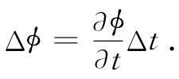
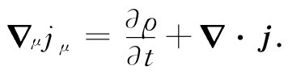
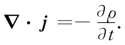
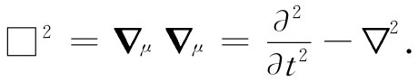
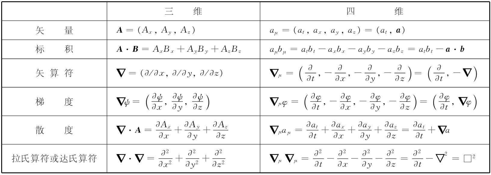

我们必须讨论的下一个问题就是梯度的四维类似物。回想起（第1卷第14章）三个微分算符∂/∂x，∂/∂y，∂/∂z的变换就像三维矢量，所以就叫梯度。同样的方案也应该适用于四维情况。这就是说，我们也许会猜测到四维梯度应当是（∂/∂t，∂/∂x，∂/∂y，∂/∂z）。然而，这是错误的 。
为了搞清这个错误，可考虑一个仅与x和t有关的标量函数ϕ。如果在t方面做一个小变化Δt而保持x不变，则在ϕ方面的变化为
 （25.13）
另一方面，对一个正在运动的观察者来说，
应用式（25.1），我们可用Δt来表示Δx′和Δt′。记住我们正保持x不变，因而Δx=0，并可写出写出
现在我们可以看到，该梯度相当奇怪。用x′和t′来表示x和t的公式［由解方程组（25.1）而得到的］为：
这就是一个四维矢量进行变换的必需 方式。但式（25.14）和（25.15）中却有两个符号搞错了！
答案是，不要那个不对 的（∂/∂t，▽），而必须通过下式来定义 一个四维梯度 算符，称之为▽μ ：
采用这一定义，上面所遇到的符号困难就消除了，从而▽μ 表现得如同一个四维矢量所应有的性质那样（带着那些负号相当难看，但那是世人都用的方法）。当然，所谓▽μ “表现得如同一个四维矢量”指的只不过是，一个标量的四维梯度为一个四维矢量。如果ϕ是一个真实的标量不变场（洛伦兹不变量），则▽μ ϕ就是一个四维矢量场。
好，现在已有了矢量、梯度和点积，下一件事情则是要找出一种与三维的矢量分析中的散度相类似的不变量。很清楚，这种类似物要求形成▽μ bμ 这样一种表示式，其中bμ 为一个四维矢量场，其分量都是空间和时间的函数。要把一个四维矢量bμ =（bt ，b）的散度定义 为▽μ 与bμ 的点积：
式中▽·b是三维矢量b的普通三维散度。注意，人们必须细心对待这些符号，其中有些负号来自标积的定义，即式（25.7），其他则是由于诸如式（25.16）中关于▽μ 的空间分量为-∂/∂x等所要求的。由式（25.17）定义出来的散度是一个不变量，因而它在相差一个洛伦兹变换的所有坐标系中给出相同的答案。
让我们来看一个其中会出现四维散度的物理例子，可以用它来求解运动导线周围场的问题。我们已经知道（§13-7）电荷密度ρ和电流密度j会形成一个四维矢量jμ =（ρ，j）。如果一根不带电荷的导线载有电流jx ，那么在一个以速度v（沿x轴）从它旁边经过的参照系中来看，该导线将拥有如下的电荷和电流密度［由洛伦兹变换式（25.1）得到］：
这些恰好就是我们曾在第13章中求得的。于是，我们就能把这些源应用到运动坐标系 的麦克斯韦方程中去求解场。
§13-2的电荷守恒律，在这四维矢量符号表示中，也会具有简单形式。考虑到jμ 的四维散度为：
 （25.18）
电荷守恒律表明，单位体积中电流的流出量应等于电荷密度的负增长率。换句话说，

将此代入式（25.18）中，电荷守恒律就会取简单形式
▽μ jμ =0. （25.19）
由于▽μ jμ 是一个不变标量，所以如果它在一个参照系中为零，则在所有参照系中都为零。于是我们就有这样的结果，即如果电荷在一个坐标系中守恒，则它在所有匀速运动的坐标系中也守恒。
作为最后一个例子，我们要考虑该梯度算符▽μ 与它自身的标积。在三维中，这样的标积给出拉普拉斯符号：
在四维中，将得到个什么呢？这很容易。按照有关点积和梯度的法则，就可以得到
这一算符，就是三维拉普拉斯算符的类似物，称为达朗贝尔算符 ，并有一种独特的表示符号：
 （25.20）
根据定义，它是一个不变的标量算符。如果它作用于一个四维矢量场上，将产生一个新的四维矢量场［有些人用与式（25.20）相反的符号给达朗贝尔算符下定义，因而当你阅读文献时务必当心］。
现在，对上面表25-1中所列举的那些三维量，大部分已找到了其四维的相应量（不过还没有叉积和旋度运算方面的相应物，在下一章以前我们将不会对它有所论述）。如果把所有重要定义和结果都集中在一处，对你记住它们如何演变可能有所帮助，因此我们就在表25-2中做了这么一个提要。
表25-2 在三维和四维矢量分析中的一些重要量
